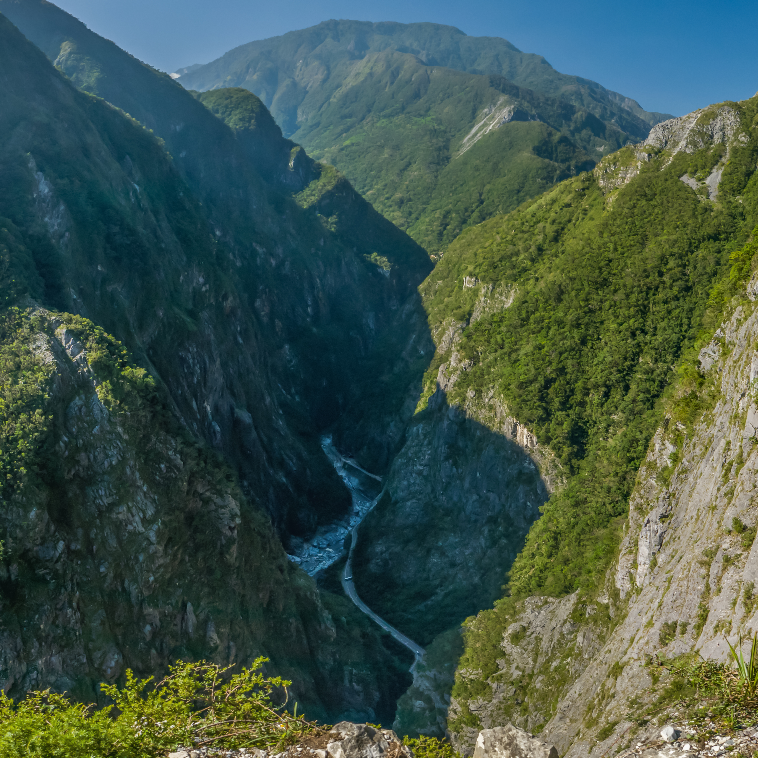
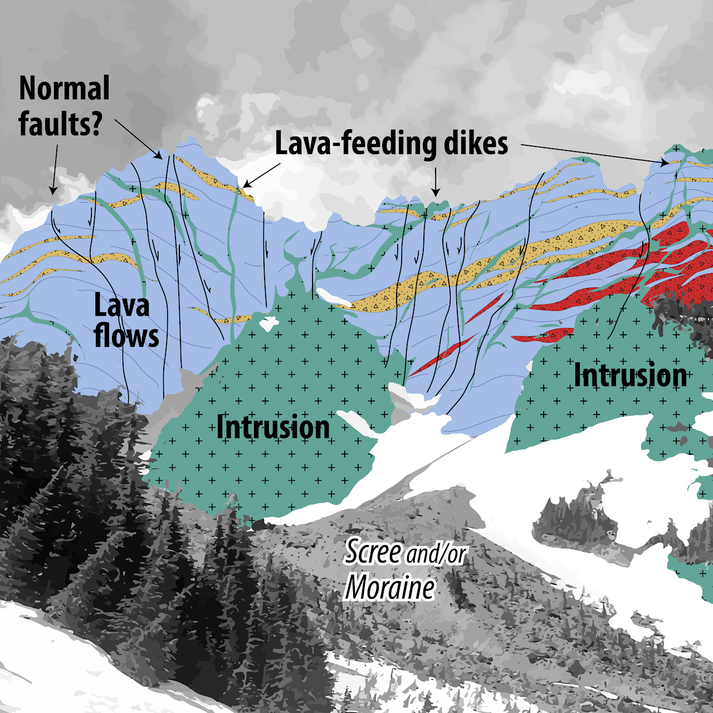
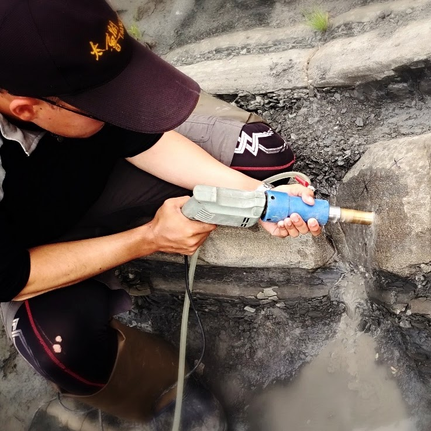
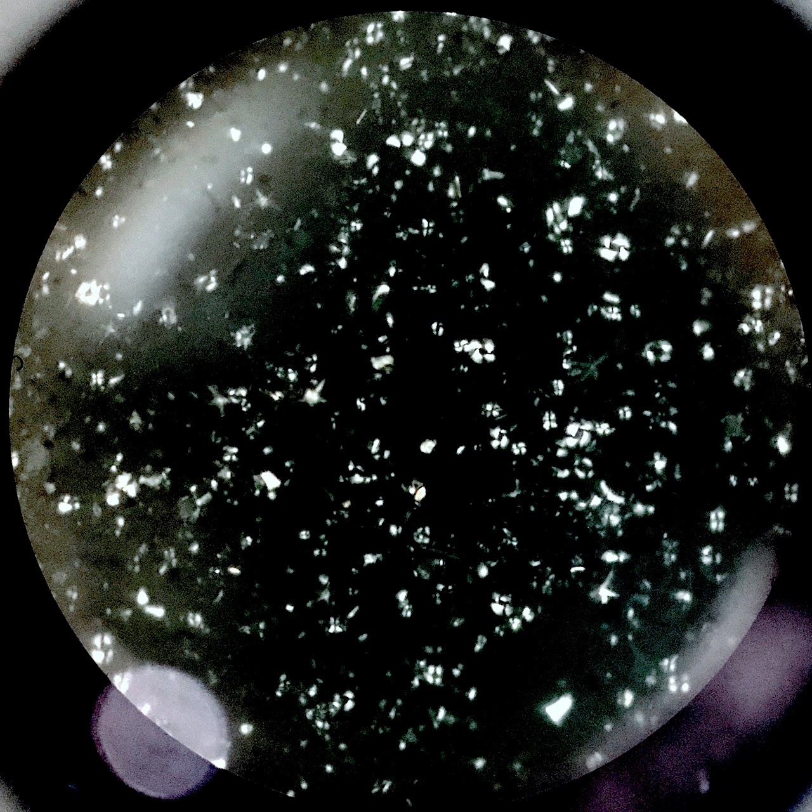
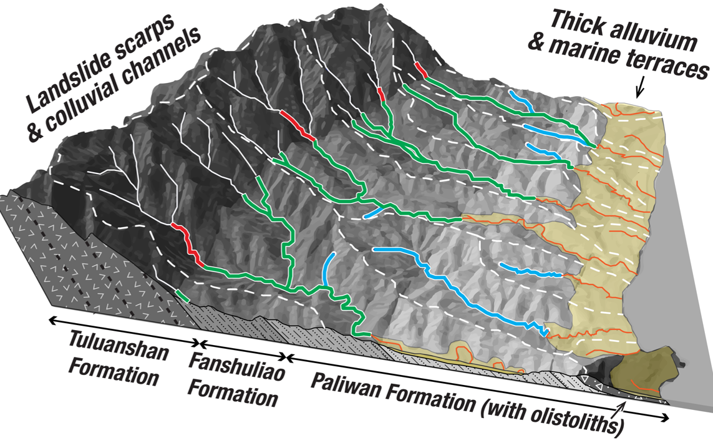
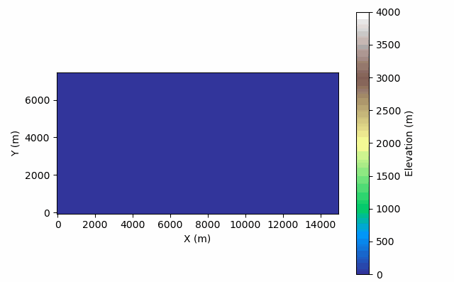
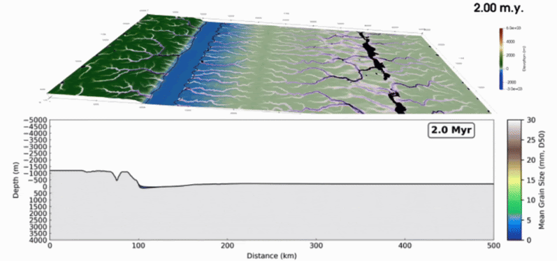

Larry Syu-Heng Lai, Ph.D.
Quantitative geoscientist


I am a quantitative geoscientist with a foundation in sedimentary geology, geomorphology, and applied data analytics. I work across wireline logs, core descriptions, 3D structure, and remote-sensing imagery to build predictive models and reproducible pipelines, and I write custom algorithms when existing tools fall short.
When I’m not immersed in research, I enjoy hiking, playing basketball, and snowboarding.
Expertises
-
Sedimentology and stratigraphy
Origin, transport, and deposition of sediments, and their patterns through time and space.
-
Sedimentary basin analysis
How sedimentary basins and near-surface crust develop, the basis for reading geologic history.
-

Tectonic geomorphology
How surface processes, climate, and tectonics shape landscapes, from field observation and numerical models.
-

Field mapping and observation
Mapping and direct observation supply the field constraints that tie an interpretation to the rocks and land in front of you.
-

Rock paleomagnetism
Magnetic minerals in rock and sediment can preserve magnetic archives of field direction and grain alignment.
-

Calcareous nannofossil
These tiny marine fossils are biostratigraphic markers that help place sedimentary layers in time.
-

Topographic analysis
Elevation models yield DEM metrics such as slope, relief, and the pattern of the drainage network.
-

Landscape evolution modeling
Landlab-style landscape simulation follows how hillslopes and rivers reshape topography over time.
-

Source-to-sink forward stratigraphic modeling
goSPL-style source-to-sink modeling tracks sediment from eroding uplands into the basin fill.

Larry Syu-Heng Lai
Room 3.128B, Bureau of Economic Geology, The University of Texas at Austin
10611 Exploration Way, Austin, TX 78758